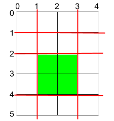
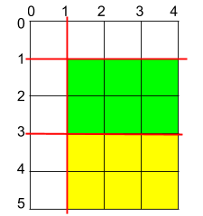

| Category | Difficulty | Likes | Dislikes |
|---|---|---|---|
| Algorithms | Medium | 2639 | 353 |
ixl | bny-mellon
You are given a rectangular cake of size h x w and two arrays of integers horizontalCuts and verticalCuts where:
horizontalCuts[i] is the distance from the top of the rectangular cake to the ith horizontal cut and similarly, andverticalCuts[j] is the distance from the left of the rectangular cake to the jth vertical cut.Return the maximum area of a piece of cake after you cut at each horizontal and vertical position provided in the arrays horizontalCuts and verticalCuts. Since the answer can be a large number, return this modulo 109 + 7.
Example 1:

Input: h = 5, w = 4, horizontalCuts = [1,2,4], verticalCuts = [1,3]
Output: 4
Explanation: The figure above represents the given rectangular cake. Red lines are the horizontal and vertical cuts. After you cut the cake, the green piece of cake has the maximum area.Example 2:

Input: h = 5, w = 4, horizontalCuts = [3,1], verticalCuts = [1]
Output: 6
Explanation: The figure above represents the given rectangular cake. Red lines are the horizontal and vertical cuts. After you cut the cake, the green and yellow pieces of cake have the maximum area.Example 3:
Input: h = 5, w = 4, horizontalCuts = [3], verticalCuts = [3]
Output: 9
Constraints:
2 <= h, w <= 1091 <= horizontalCuts.length <= min(h - 1, 105)1 <= verticalCuts.length <= min(w - 1, 105)1 <= horizontalCuts[i] < h1 <= verticalCuts[i] < whorizontalCuts are distinct.verticalCuts are distinct.